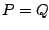

The
elementary recirculating filter is the recirculating comb filter of
Figure 7.7 with a
complex-valued feedback gain  as shown in Figure 8.11 (part
a). By the same analysis as before, feeding this network a sinusoid whose
as shown in Figure 8.11 (part
a). By the same analysis as before, feeding this network a sinusoid whose
 th sample is
th sample is  gives an output of:
gives an output of:
The transfer function is thus just the inverse of that of the non-recirculating filter (first form). If you put the two in series with , the output theoretically equals the input. (This analysis only demonstrates it for sinusoidal inputs; that it follows for other signals as well can be verified by working out the impulse response of the combined network).